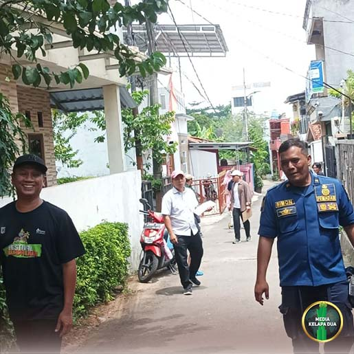
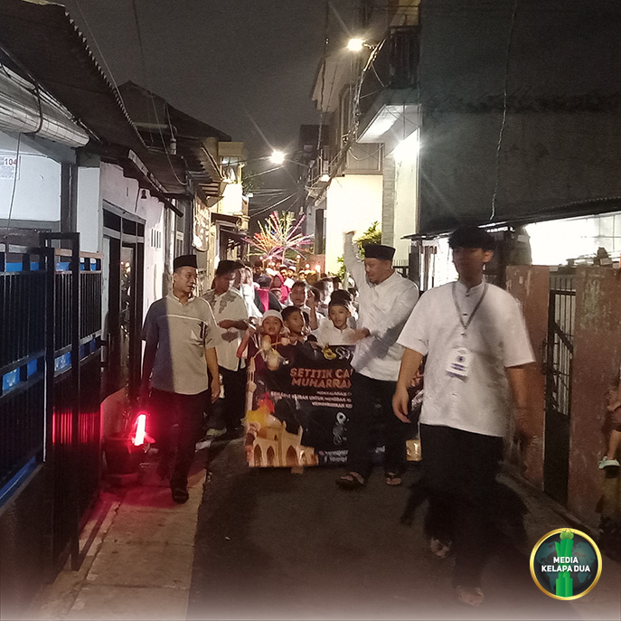

Tanggal, 01 April 2026
MediaKada | Suku Dinas Penanggulangan Kebakaran dan Penyelamatan (Sudin Gulkarmat) Jakarta Barat merencanakan pembangunan hidran mandiri di RW 08 Kelurahan Kelapa Dua, Kecamatan Kebon Jeruk, Jakarta Barat. Program ini ditujukan untuk memperkuat kesiapsiagaan warga dalam menghadapi potensi kebakaran, khususnya di kawasan padat penduduk yang sulit dijangkau mobil pemadam.
Pada Rabu, 01 April 2026 jajaran Gulkarmat Jakarta Barat bersama perangkat wilayah melakukan pengecekan lokasi pembangunan serta jalur pipanisasi hidran mandiri. Jalur pipa direncanakan membentang sepanjang kurang lebih 700 meter, meliputi Gg. Lada RT 004/08, Jalan Kayu Manis RT 005/08 hingga RT 007/03. Wilayah tersebut selama ini dikenal sempit dan tidak dapat dilalui kendaraan damkar, sehingga keberadaan hidran mandiri dinilai sangat strategis.
Kegiatan pengecekan turut dihadiri oleh Kasudis Gulkarmat Jakarta Barat, Suheri, S.Sos., MAP beserta jajaran, Ka. Satgas Gulkarmat Kelurahan Kelapa Dua, Lurah Kelapa Dua, Kasi Pemerintahan Kecamatan Kebon Jeruk, Kasi Pemerintahan Kelurahan Kelapa Dua, Kasi Ekonomi dan Pembangunan Kelurahan Kelapa Dua, LMK 08, serta Ketua RW 08.
Dalam keterangannya, Suheri menegaskan bahwa pembangunan hidran mandiri akan memberikan manfaat besar bagi masyarakat. “Fasilitas ini akan mempercepat penanganan dini kebakaran di wilayah padat penduduk dan area yang sulit dijangkau mobil damkar. Nantinya, relawan pemadam kebakaran (Redcar) atau warga yang sudah dilatih dapat menggunakan hidran mandiri untuk penanganan awal bila terjadi kebakaran,” jelasnya.
Hidran mandiri tersebut akan dilengkapi dengan tandon air dan pompa stationer yang dibangun di samping Sekretariat RW 08 Kelurahan Kelapa Dua. Dengan adanya sumber air mandiri, warga diharapkan mampu melakukan langkah cepat untuk melokalisir api sebelum petugas damkar tiba di lokasi.
Ketua RW 08 Kelurahan Kelapa Dua, Bisri Ali, menyambut baik rencana pembangunan ini. Menurutnya, keberadaan hidran mandiri akan meningkatkan kesiapsiagaan warga sekaligus memperkuat sistem perlindungan lingkungan permukiman. “Hidran mandiri ini sangat berguna untuk melokalisir api sebelum petugas damkar tiba, sekaligus meningkatkan kesiapsiagaan warga apabila terjadi kebakaran,” ujarnya.
Pembangunan hidran mandiri di RW 08 Kelapa Dua menjadi salah satu langkah nyata Sudin Gulkarmat Jakarta Barat dalam memperkuat sistem penanggulangan kebakaran berbasis masyarakat. Dengan dukungan perangkat wilayah dan partisipasi aktif warga, diharapkan fasilitas ini mampu menjadi garda terdepan dalam mencegah meluasnya kebakaran di kawasan padat penduduk.
(LMK-08 Kelapa Dua)

Festival Bandeng Rawa Belong 2026: Merajut Harmoni Tradisi Betawi dan Tionghoa